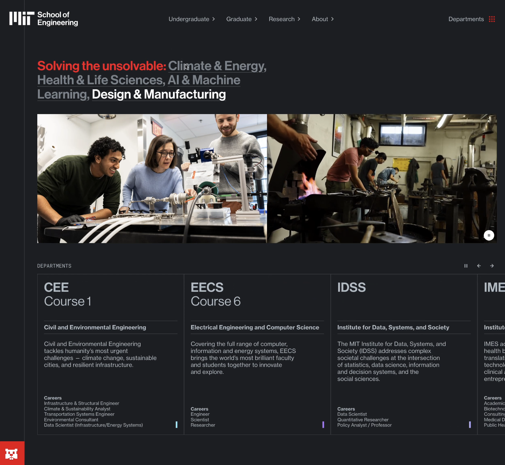

01
MIT School of Engineering — Website Redesign
Co-led the comprehensive redesign of engineering.mit.edu with Upstatement. CASE Circle of Excellence Award submission.
// welcome
Digital Communications Specialist at MIT
|
// about me
Communications professional with experience spanning education and higher ed — from independent school classrooms to the Massachusetts Institute of Technology. I shoot, edit, design, write, build websites, manage social media, and lead projects. What ties it all together is a belief that institutions do their best work when they communicate honestly, with craft and care, about the things that matter most.
// featured work

Co-led the comprehensive redesign of engineering.mit.edu with Upstatement. CASE Circle of Excellence Award submission.
Seven years as the communications engine behind MIT's campus-wide makerspace initiative.
Multimedia strategy and production for one of the nation's leading independent boarding schools.